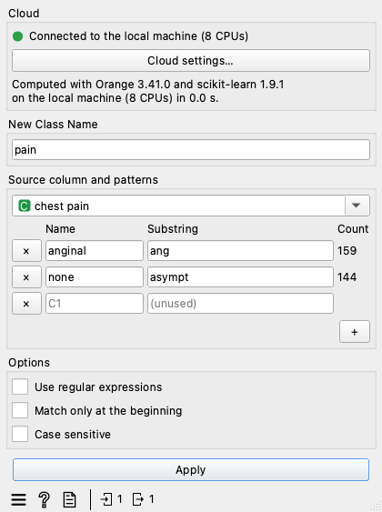

Creates a class column from substrings of a text or categorical column of a cloud table, as Orange's Create Class does, with its rules applied on all rows.

Like every Cloud widget, it has a Cloud box at the top: whether a machine is connected, Cloud settings…, and what the last job ran with, how long it took and what it cost. See Cloud widgets.
It works like Orange's Create Class: give the new class name, choose the source column (text or categorical), and write the rules, a class name and a substring each. A row gets the class of the first rule whose substring it contains; an empty substring takes all rows that are left, and empty class names become C1, C2, .... The options are Create Class's: use regular expressions, match only at the beginning and case sensitive. Click Apply.
The counts next to each rule are the rows it matches, and in gray the matching rows that a rule above already took, counted on all rows. As in Create Class, the rules after the one that leaves no rows are unused and left out. A text column with more than 100,000 different values shows no counts; the machine still applies the rules on all rows.
Orange's own Create Class sees only the placeholder row of a cloud table, so it keeps only its first rule; the machine refuses its step with a message that points here.
The new table is a new table on the machine, about as large as the input. If the machine hasn't enough memory for it, the widget says so; choose a larger machine size in Cloud settings.